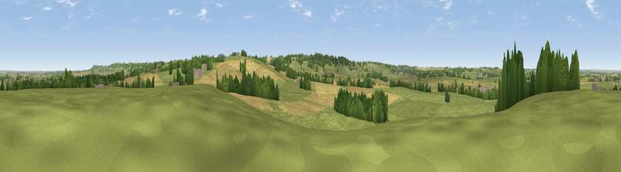

Viewpoint near Long Clawson
#25777 in England · top 41% of its area beats it · near Long ClawsonWhere it is
The exact computed spot (SK 71425 26425). Click the marker for map links.
The view, rendered

A 360° render of this exact spot computed from the terrain model, tree cover and land cover — summer colours, afternoon light, calibrated against photographs of famous viewpoints. Real trees, hedges and buildings will differ in detail.
The panorama
Grey silhouette: terrain skyline in each direction (720 bearings, Earth curvature and refraction included). Dashed green: skyline with trees (+15 m) and buildings (+8 m) as obstacles. Blue strip: how far the ground is visible on each bearing.
Where the view opens
Wedge length = distance to the farthest visible ground on that bearing (vegetation-aware). Rings at 10, 25 and 50 km.
What fills the view
57% grassland · 33% cropland · 9% woodland · 1% built-up
Angular shares of the visible panorama (visual magnitude), not map area. Landscape diversity 0.41 (0–1 Shannon).
Key numbers
More beautiful places nearby
The staircase of upgrades: each row has a higher view potential than everything closer. Driving times are estimates from straight-line distance, calibrated against real road routing — check an actual route before setting out.
| Place | Direction | Drive | Score |
|---|---|---|---|
| Viewpoint near Wartnaby | S · 2 km | ~6 min | 61.6 |
| Viewpoint near Eastwell | ENE · 5 km | ~11 min | 63.7 |
| Viewpoint near Stathern | ENE · 8 km | ~16 min | 66.3 |
| Viewpoint near Stathern | NE · 8 km | ~17 min | 67.2 |
| Viewpoint near Belvoir | ENE · 12 km | ~23 min | 68.9 |
| Viewpoint near Belvoir | NE · 13 km | ~24 min | 70.8 |
| Broombriggs Hill | WSW · 23 km | ~38 min | 74.4 |
| Viewpoint near Woodhouse Eaves | WSW · 23 km | ~39 min | 77.7 |
52.83062, -0.94131 · source: screening · position refined by local search. Computed location — check access rights before visiting.